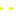

<!doctype html>
<html lang="en">
    <head>
        <meta charset="utf-8">
        <meta http-equiv="X-UA-Compatible" content="IE=edge">
        <meta name="viewport" content="initial-scale=1,user-scalable=no,maximum-scale=1,width=device-width">
        <meta name="mobile-web-app-capable" content="yes">
        <meta name="apple-mobile-web-app-capable" content="yes">
        <link rel="stylesheet" href="css/leaflet.css">
        <link rel="stylesheet" href="css/qgis2web.css"><link rel="stylesheet" href="css/fontawesome-all.min.css">
        <link rel="stylesheet" href="css/leaflet-measure.css">
        <style>
        #map {
            width: 1564px;
            height: 807px;
        }
        </style>
        <title></title>
    </head>
    <body>
        <div id="map">
        </div>
        <script src="js/qgis2web_expressions.js"></script>
        <script src="js/leaflet.js"></script>
        <script src="js/leaflet.rotatedMarker.js"></script>
        <script src="js/leaflet.pattern.js"></script>
        <script src="js/leaflet-hash.js"></script>
        <script src="js/Autolinker.min.js"></script>
        <script src="js/rbush.min.js"></script>
        <script src="js/labelgun.min.js"></script>
        <script src="js/labels.js"></script>
        <script src="js/leaflet-measure.js"></script>
        <script src="data/ADY_PROPERTY_6.js"></script>
        <script src="data/DRILLHOLE_TRACE_7.js"></script>
        <script>
        var map = L.map('map', {
            zoomControl:true, maxZoom:28, minZoom:1
        }).fitBounds([[-28.70648850203547,-70.86868764199164],[-28.660304775163393,-70.76920954636977]]);
        var hash = new L.Hash(map);
        map.attributionControl.setPrefix('<a href="https://github.com/tomchadwin/qgis2web" target="_blank">qgis2web</a> &middot; <a href="https://leafletjs.com" title="A JS library for interactive maps">Leaflet</a> &middot; <a href="https://qgis.org">QGIS</a>');
        var autolinker = new Autolinker({truncate: {length: 30, location: 'smart'}});
        var measureControl = new L.Control.Measure({
            position: 'topleft',
            primaryLengthUnit: 'meters',
            secondaryLengthUnit: 'kilometers',
            primaryAreaUnit: 'sqmeters',
            secondaryAreaUnit: 'hectares'
        });
        measureControl.addTo(map);
        document.getElementsByClassName('leaflet-control-measure-toggle')[0]
        .innerHTML = '';
        document.getElementsByClassName('leaflet-control-measure-toggle')[0]
        .className += ' fas fa-ruler';
        var bounds_group = new L.featureGroup([]);
        function setBounds() {
        }
        map.createPane('pane_GoogleSat_0');
        map.getPane('pane_GoogleSat_0').style.zIndex = 400;
        var layer_GoogleSat_0 = L.tileLayer('https://mt1.google.com/vt/lyrs=s&x={x}&y={y}&z={z}', {
            pane: 'pane_GoogleSat_0',
            opacity: 0.75,
            attribution: '',
            minZoom: 1,
            maxZoom: 28,
            minNativeZoom: 0,
            maxNativeZoom: 18
        });
        layer_GoogleSat_0;
        map.addLayer(layer_GoogleSat_0);
        var img_LAYOUT_MARIPOSAII_1 = 'data/LAYOUT_MARIPOSAII_1.png';
        var img_bounds_LAYOUT_MARIPOSAII_1 = [[-28.69991475816511,-70.84778738171799],[-28.661160888255278,-70.78632003339271]];
        var layer_LAYOUT_MARIPOSAII_1 = new L.imageOverlay(img_LAYOUT_MARIPOSAII_1, img_bounds_LAYOUT_MARIPOSAII_1);
        bounds_group.addLayer(layer_LAYOUT_MARIPOSAII_1);
        map.addLayer(layer_LAYOUT_MARIPOSAII_1);
        var img_MALPELO_LAVACA_POLERED_2 = 'data/MALPELO_LAVACA_POLERED_2.png';
        var img_bounds_MALPELO_LAVACA_POLERED_2 = [[-28.70535659601325,-70.86091544948843],[-28.662267826491902,-70.83317854028223]];
        var layer_MALPELO_LAVACA_POLERED_2 = new L.imageOverlay(img_MALPELO_LAVACA_POLERED_2, img_bounds_MALPELO_LAVACA_POLERED_2);
        bounds_group.addLayer(layer_MALPELO_LAVACA_POLERED_2);
        map.addLayer(layer_MALPELO_LAVACA_POLERED_2);
        var img_MARIPOSA_WEST_POLERED_3 = 'data/MARIPOSA_WEST_POLERED_3.png';
        var img_bounds_MARIPOSA_WEST_POLERED_3 = [[-28.65960832319797,-70.86564257250505],[-28.63539050220837,-70.8484089679604]];
        var layer_MARIPOSA_WEST_POLERED_3 = new L.imageOverlay(img_MARIPOSA_WEST_POLERED_3, img_bounds_MARIPOSA_WEST_POLERED_3);
        bounds_group.addLayer(layer_MARIPOSA_WEST_POLERED_3);
        map.addLayer(layer_MARIPOSA_WEST_POLERED_3);
        var img_NEGRITA_POLERED_4 = 'data/NEGRITA_POLERED_4.png';
        var img_bounds_NEGRITA_POLERED_4 = [[-28.71794953672204,-70.83950066126366],[-28.708909423277767,-70.83059316954412]];
        var layer_NEGRITA_POLERED_4 = new L.imageOverlay(img_NEGRITA_POLERED_4, img_bounds_NEGRITA_POLERED_4);
        bounds_group.addLayer(layer_NEGRITA_POLERED_4);
        map.addLayer(layer_NEGRITA_POLERED_4);
        var img_MARIPOSA_PHASEII_POLERED_5 = 'data/MARIPOSA_PHASEII_POLERED_5.png';
        var img_bounds_MARIPOSA_PHASEII_POLERED_5 = [[-28.694228458061332,-70.83367697916881],[-28.669441029352264,-70.80659404247358]];
        var layer_MARIPOSA_PHASEII_POLERED_5 = new L.imageOverlay(img_MARIPOSA_PHASEII_POLERED_5, img_bounds_MARIPOSA_PHASEII_POLERED_5);
        bounds_group.addLayer(layer_MARIPOSA_PHASEII_POLERED_5);
        map.addLayer(layer_MARIPOSA_PHASEII_POLERED_5);
        function pop_ADY_PROPERTY_6(feature, layer) {
            var popupContent = '<table>\
                    <tr>\
                        <td colspan="2">' + (feature.properties['fid'] !== null ? autolinker.link(feature.properties['fid'].toLocaleString()) : '') + '</td>\
                    </tr>\
                    <tr>\
                        <td colspan="2">' + (feature.properties['handle'] !== null ? autolinker.link(feature.properties['handle'].toLocaleString()) : '') + '</td>\
                    </tr>\
                    <tr>\
                        <td colspan="2">' + (feature.properties['block'] !== null ? autolinker.link(feature.properties['block'].toLocaleString()) : '') + '</td>\
                    </tr>\
                    <tr>\
                        <td colspan="2">' + (feature.properties['etype'] !== null ? autolinker.link(feature.properties['etype'].toLocaleString()) : '') + '</td>\
                    </tr>\
                    <tr>\
                        <td colspan="2">' + (feature.properties['space'] !== null ? autolinker.link(feature.properties['space'].toLocaleString()) : '') + '</td>\
                    </tr>\
                    <tr>\
                        <td colspan="2">' + (feature.properties['layer'] !== null ? autolinker.link(feature.properties['layer'].toLocaleString()) : '') + '</td>\
                    </tr>\
                    <tr>\
                        <td colspan="2">' + (feature.properties['olinetype'] !== null ? autolinker.link(feature.properties['olinetype'].toLocaleString()) : '') + '</td>\
                    </tr>\
                    <tr>\
                        <td colspan="2">' + (feature.properties['linetype'] !== null ? autolinker.link(feature.properties['linetype'].toLocaleString()) : '') + '</td>\
                    </tr>\
                    <tr>\
                        <td colspan="2">' + (feature.properties['color'] !== null ? autolinker.link(feature.properties['color'].toLocaleString()) : '') + '</td>\
                    </tr>\
                    <tr>\
                        <td colspan="2">' + (feature.properties['ocolor'] !== null ? autolinker.link(feature.properties['ocolor'].toLocaleString()) : '') + '</td>\
                    </tr>\
                    <tr>\
                        <td colspan="2">' + (feature.properties['color24'] !== null ? autolinker.link(feature.properties['color24'].toLocaleString()) : '') + '</td>\
                    </tr>\
                    <tr>\
                        <td colspan="2">' + (feature.properties['transparen'] !== null ? autolinker.link(feature.properties['transparen'].toLocaleString()) : '') + '</td>\
                    </tr>\
                    <tr>\
                        <td colspan="2">' + (feature.properties['lweight'] !== null ? autolinker.link(feature.properties['lweight'].toLocaleString()) : '') + '</td>\
                    </tr>\
                    <tr>\
                        <td colspan="2">' + (feature.properties['linewidth'] !== null ? autolinker.link(feature.properties['linewidth'].toLocaleString()) : '') + '</td>\
                    </tr>\
                    <tr>\
                        <td colspan="2">' + (feature.properties['ltscale'] !== null ? autolinker.link(feature.properties['ltscale'].toLocaleString()) : '') + '</td>\
                    </tr>\
                    <tr>\
                        <td colspan="2">' + (feature.properties['visible'] !== null ? autolinker.link(feature.properties['visible'].toLocaleString()) : '') + '</td>\
                    </tr>\
                    <tr>\
                        <td colspan="2">' + (feature.properties['width'] !== null ? autolinker.link(feature.properties['width'].toLocaleString()) : '') + '</td>\
                    </tr>\
                    <tr>\
                        <td colspan="2">' + (feature.properties['thickness'] !== null ? autolinker.link(feature.properties['thickness'].toLocaleString()) : '') + '</td>\
                    </tr>\
                    <tr>\
                        <td colspan="2">' + (feature.properties['ext'] !== null ? autolinker.link(feature.properties['ext'].toLocaleString()) : '') + '</td>\
                    </tr>\
                </table>';
            layer.bindPopup(popupContent, {maxHeight: 400});
        }

        function style_ADY_PROPERTY_6_0() {
            return {
                pane: 'pane_ADY_PROPERTY_6',
                opacity: 1,
                color: 'rgba(247,247,0,1.0)',
                dashArray: '',
                lineCap: 'round',
                lineJoin: 'round',
                weight: 3.0,
                fillOpacity: 0,
                interactive: true,
            }
        }
        map.createPane('pane_ADY_PROPERTY_6');
        map.getPane('pane_ADY_PROPERTY_6').style.zIndex = 406;
        map.getPane('pane_ADY_PROPERTY_6').style['mix-blend-mode'] = 'normal';
        var layer_ADY_PROPERTY_6 = new L.geoJson(json_ADY_PROPERTY_6, {
            attribution: '',
            interactive: true,
            dataVar: 'json_ADY_PROPERTY_6',
            layerName: 'layer_ADY_PROPERTY_6',
            pane: 'pane_ADY_PROPERTY_6',
            onEachFeature: pop_ADY_PROPERTY_6,
            style: style_ADY_PROPERTY_6_0,
        });
        bounds_group.addLayer(layer_ADY_PROPERTY_6);
        map.addLayer(layer_ADY_PROPERTY_6);
        function pop_DRILLHOLE_TRACE_7(feature, layer) {
            var popupContent = '<table>\
                    <tr>\
                        <td colspan="2">' + (feature.properties['fid'] !== null ? autolinker.link(feature.properties['fid'].toLocaleString()) : '') + '</td>\
                    </tr>\
                    <tr>\
                        <td colspan="2">' + (feature.properties['handle'] !== null ? autolinker.link(feature.properties['handle'].toLocaleString()) : '') + '</td>\
                    </tr>\
                    <tr>\
                        <td colspan="2">' + (feature.properties['block'] !== null ? autolinker.link(feature.properties['block'].toLocaleString()) : '') + '</td>\
                    </tr>\
                    <tr>\
                        <td colspan="2">' + (feature.properties['etype'] !== null ? autolinker.link(feature.properties['etype'].toLocaleString()) : '') + '</td>\
                    </tr>\
                    <tr>\
                        <td colspan="2">' + (feature.properties['space'] !== null ? autolinker.link(feature.properties['space'].toLocaleString()) : '') + '</td>\
                    </tr>\
                    <tr>\
                        <td colspan="2">' + (feature.properties['layer'] !== null ? autolinker.link(feature.properties['layer'].toLocaleString()) : '') + '</td>\
                    </tr>\
                    <tr>\
                        <td colspan="2">' + (feature.properties['olinetype'] !== null ? autolinker.link(feature.properties['olinetype'].toLocaleString()) : '') + '</td>\
                    </tr>\
                    <tr>\
                        <td colspan="2">' + (feature.properties['linetype'] !== null ? autolinker.link(feature.properties['linetype'].toLocaleString()) : '') + '</td>\
                    </tr>\
                    <tr>\
                        <td colspan="2">' + (feature.properties['color'] !== null ? autolinker.link(feature.properties['color'].toLocaleString()) : '') + '</td>\
                    </tr>\
                    <tr>\
                        <td colspan="2">' + (feature.properties['ocolor'] !== null ? autolinker.link(feature.properties['ocolor'].toLocaleString()) : '') + '</td>\
                    </tr>\
                    <tr>\
                        <td colspan="2">' + (feature.properties['color24'] !== null ? autolinker.link(feature.properties['color24'].toLocaleString()) : '') + '</td>\
                    </tr>\
                    <tr>\
                        <td colspan="2">' + (feature.properties['transparen'] !== null ? autolinker.link(feature.properties['transparen'].toLocaleString()) : '') + '</td>\
                    </tr>\
                    <tr>\
                        <td colspan="2">' + (feature.properties['lweight'] !== null ? autolinker.link(feature.properties['lweight'].toLocaleString()) : '') + '</td>\
                    </tr>\
                    <tr>\
                        <td colspan="2">' + (feature.properties['linewidth'] !== null ? autolinker.link(feature.properties['linewidth'].toLocaleString()) : '') + '</td>\
                    </tr>\
                    <tr>\
                        <td colspan="2">' + (feature.properties['ltscale'] !== null ? autolinker.link(feature.properties['ltscale'].toLocaleString()) : '') + '</td>\
                    </tr>\
                    <tr>\
                        <td colspan="2">' + (feature.properties['visible'] !== null ? autolinker.link(feature.properties['visible'].toLocaleString()) : '') + '</td>\
                    </tr>\
                    <tr>\
                        <td colspan="2">' + (feature.properties['width'] !== null ? autolinker.link(feature.properties['width'].toLocaleString()) : '') + '</td>\
                    </tr>\
                    <tr>\
                        <td colspan="2">' + (feature.properties['thickness'] !== null ? autolinker.link(feature.properties['thickness'].toLocaleString()) : '') + '</td>\
                    </tr>\
                    <tr>\
                        <td colspan="2">' + (feature.properties['ext'] !== null ? autolinker.link(feature.properties['ext'].toLocaleString()) : '') + '</td>\
                    </tr>\
                </table>';
            layer.bindPopup(popupContent, {maxHeight: 400});
        }

        function style_DRILLHOLE_TRACE_7_0() {
            return {
                pane: 'pane_DRILLHOLE_TRACE_7',
                opacity: 1,
                color: 'rgba(0,0,0,1.0)',
                dashArray: '',
                lineCap: 'square',
                lineJoin: 'bevel',
                weight: 3.0,
                fillOpacity: 0,
                interactive: true,
            }
        }
        map.createPane('pane_DRILLHOLE_TRACE_7');
        map.getPane('pane_DRILLHOLE_TRACE_7').style.zIndex = 407;
        map.getPane('pane_DRILLHOLE_TRACE_7').style['mix-blend-mode'] = 'normal';
        var layer_DRILLHOLE_TRACE_7 = new L.geoJson(json_DRILLHOLE_TRACE_7, {
            attribution: '',
            interactive: true,
            dataVar: 'json_DRILLHOLE_TRACE_7',
            layerName: 'layer_DRILLHOLE_TRACE_7',
            pane: 'pane_DRILLHOLE_TRACE_7',
            onEachFeature: pop_DRILLHOLE_TRACE_7,
            style: style_DRILLHOLE_TRACE_7_0,
        });
        bounds_group.addLayer(layer_DRILLHOLE_TRACE_7);
        map.addLayer(layer_DRILLHOLE_TRACE_7);
        var baseMaps = {};
        L.control.layers(baseMaps,{' DRILLHOLE_TRACE': layer_DRILLHOLE_TRACE_7,' ADY_PROPERTY': layer_ADY_PROPERTY_6,"MARIPOSA_PHASEII_POLERED": layer_MARIPOSA_PHASEII_POLERED_5,"NEGRITA_POLERED": layer_NEGRITA_POLERED_4,"MARIPOSA_WEST_POLERED": layer_MARIPOSA_WEST_POLERED_3,"MALPELO_LAVACA_POLERED": layer_MALPELO_LAVACA_POLERED_2,"LAYOUT_MARIPOSAII": layer_LAYOUT_MARIPOSAII_1,"Google Sat": layer_GoogleSat_0,}).addTo(map);
        setBounds();
        L.ImageOverlay.include({
            getBounds: function () {
                return this._bounds;
            }
        });
        </script>
    </body>
</html>
